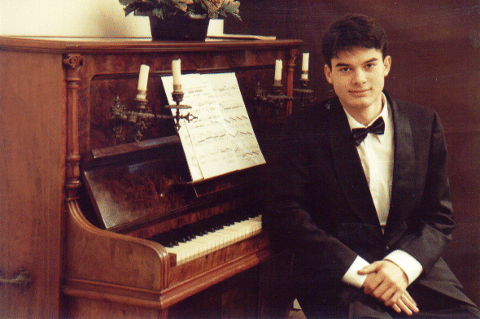
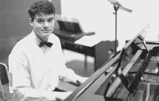
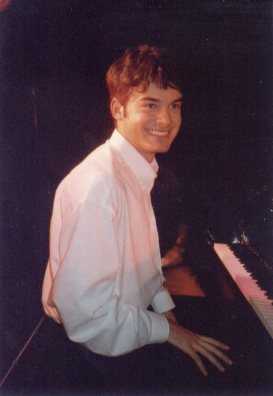
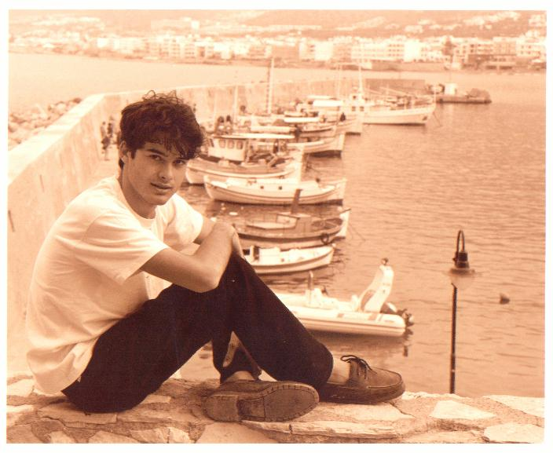
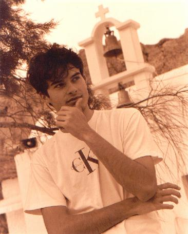
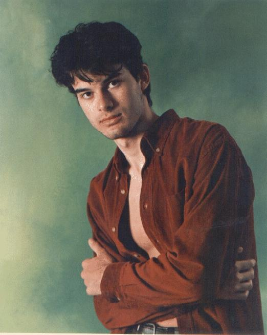
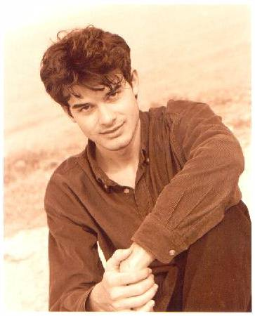
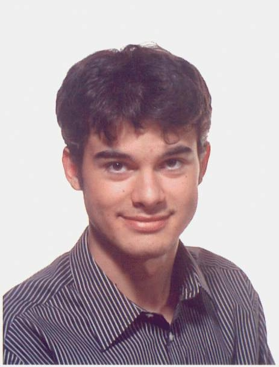
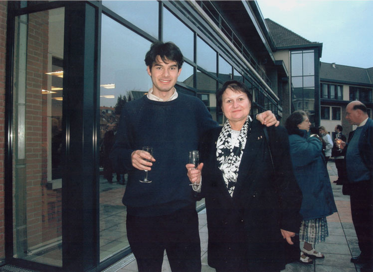

Photographs from the early years

1999 — Brussels

December 1998 — Gent, Belgium
Flores Juventutis Festival

27 October 2000 — Brussels
during Viva Musica

At the harbour, Hersonisou

Near a Greek chapel, Hersonisou

14 April 2002 — Hersonisou, Greece

14 April 2002 — Hersonisou, Greece

30 September 2000 — Luxembourg ville

December 2002 — Brussels (Woluwe St-Pierre)
With his mother, Aurelia Gherman